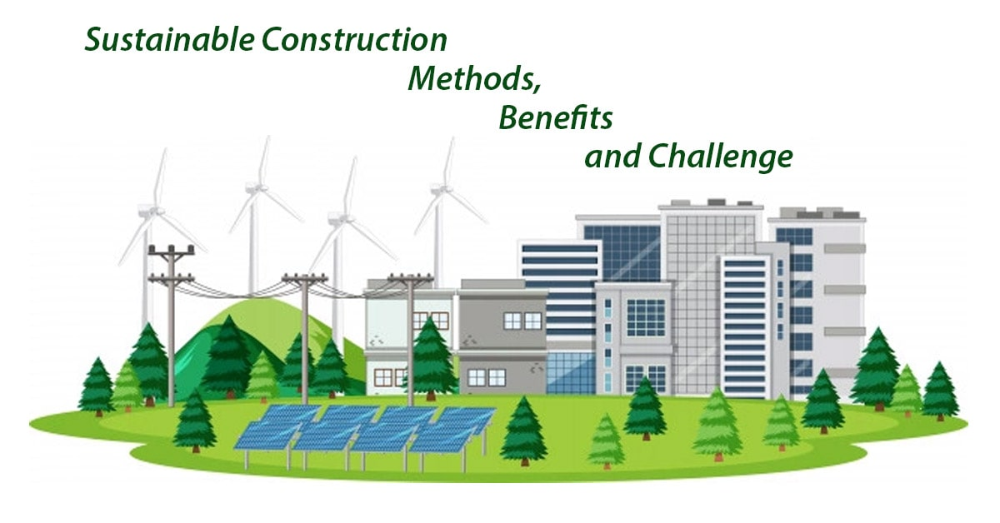
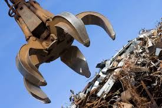
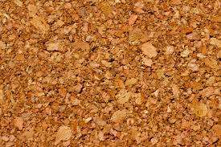
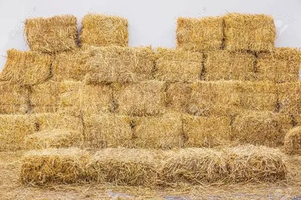
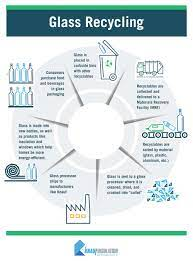
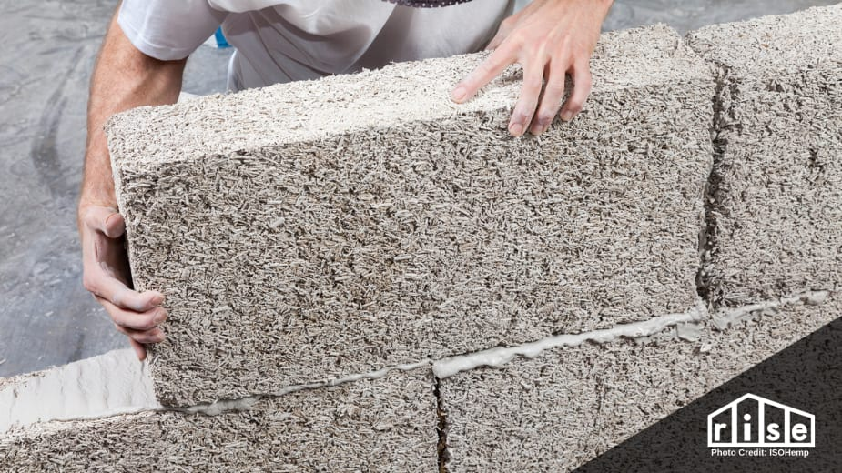

Sustainable Construction Materials (SCM) are building materials that have been designed and manufactured to minimize their environmental impact and increase their social and economic sustainability. These materials are used to construct buildings that are environmentally friendly, socially responsible, and economically viable. There are several characteristics that define SCM. First, they are sourced from renewable or recycled materials, reducing the reliance on non-renewable resources. Second, they are designed to be durable and long-lasting, reducing waste and the need for frequent replacements. Third, they are manufactured using processes that minimize energy consumption, greenhouse gas emissions, and waste generation. Fourth, they are safe and healthy for both occupants and workers, with low levels of toxic substances. SCM are increasingly being adopted in the construction industry as a response to the environmental and social challenges faced by the sector. Buildings are a major contributor to greenhouse gas emissions, energy consumption, and waste generation, so incorporating SCM can help reduce these impacts. Additionally, the use of SCM can promote the use of renewable resources, support local economies, and improve the health and wellbeing of occupants. Examples of SCM include bamboo, recycled steel, cork, straw bales, recycled glass, and reclaimed wood. These materials have been used in a variety of building applications, from flooring and wall systems to roofing and insulation. The choice of SCM will depend on factors such as the building design, climate, and local availability of materials. Overall, SCM are an important aspect of sustainable construction practices, and their use is critical in achieving a more sustainable built environment.
What are Sustainable Materials?

Benefits of Sustainable Construction Materials
- Environmental benefits: SCM are sourced from renewable or recycled materials, which reduces the consumption of non-renewable resources and the amount of waste generated during the construction process. They also help to reduce the carbon footprint of buildings, as they require less energy to manufacture and transport compared to traditional building materials.
- Health benefits: SCM are often less toxic than traditional building materials, which can have significant health benefits for occupants of buildings. For example, using natural and low-toxicity materials can help to reduce indoor air pollution and improve indoor air quality, leading to a healthier living and working environment.
- Cost savings: While SCM may have a higher initial cost than traditional building materials, they often offer cost savings over the long term due to their durability, low maintenance requirements, and energy efficiency. For example, energy-efficient windows and insulation can help to reduce heating and cooling costs over time.
- Local economic benefits: SCM can be sourced locally, supporting local economies and reducing the carbon footprint associated with transporting materials long distances. Additionally, using SCM can create jobs in local communities, supporting local economic development.
- Aesthetics: Many SCM have unique and attractive visual characteristics that can enhance the appearance of buildings. For example, reclaimed wood can add warmth and character to a space, while natural stone or clay tiles can create a timeless and elegant look.
Overall, using SCM in building construction can have a wide range of benefits, including environmental, health, economic, and aesthetic benefits. As the construction industry continues to focus on sustainable practices, the use of SCM will become increasingly important in creating a more sustainable built environment.
The current Status of India to achieve 2030 agenda for sustainabale development
Bamboo is a fast-growing, renewable resource that can be harvested in as little as three to five years. It is strong, durable, and flexible, making it suitable for a range of construction applications, such as flooring, walls, and furniture. Bamboo is also resistant to moisture, insects, and fire, making it a popular choice for sustainable construction. Additionally, bamboo sequesters carbon dioxide as it grows, which makes it a carbon-negative material.
Bamboo is a sustainable construction material because it grows quickly, which makes it a renewable resource. Compared to traditional construction materials like concrete, steel, and wood, bamboo has a lower environmental impact because it requires fewer resources to grow, harvest, and transport, and it produces less waste and pollution.Additionally, bamboo has a high strength-to-weight ratio, making it strong and durable despite being lightweight. This means that it can be used in a variety of construction applications, including flooring, roofing, walls, and furniture. Bamboo also absorbs large amounts of carbon dioxide from the atmosphere during its growth, making it an excellent tool for carbon sequestration. Overall, bamboo is a highly sustainable construction material that offers many advantages over traditional materials.

Steel is one of the most recycled materials in the world, and it can be used in construction in a range of applications, such as structural elements, roofing, and cladding. Using recycled steel reduces the need for new steel production, which conserves resources and reduces the carbon footprint of buildings. Additionally, recycled steel has the same properties as new steel, making it a durable and long-lasting material. Recycled steel is a sustainable construction material for several reasons.
First, it has a significantly lower environmental impact than traditional steel because it requires fewer resources to produce. Recycling steel uses less energy and raw materials compared to the production of new steel, resulting in a lower carbon footprint and reduced greenhouse gas emissions.
Second, using recycled steel in construction can help reduce waste by diverting discarded materials from landfills. This process contributes to the circular economy by reusing materials instead of creating new ones.
Third, recycled steel has the same durability and strength as new steel, making it a reliable material for construction projects. It can be used in a variety of applications, including framing, roofing, and reinforcements.
Finally, using recycled steel in construction helps to conserve natural resources, such as iron ore and coal. By reducing the demand for new steel production, we can preserve non-renewable resources for future generations. Overall, recycled steel is a sustainable construction material that offers several advantages over traditional steel. It has a lower environmental impact, reduces waste, maintains durability and strength, and helps conserve natural resources.

Cork is a natural, renewable material that is harvested from the bark of cork oak trees. It is lightweight, insulating, and soundproof, making it suitable for flooring, insulation, and acoustic panels. Cork is also hypoallergenic and resistant to moisture, mold, and fire. Additionally, cork oak trees are harvested every nine years without harming the tree, making cork a sustainable material choice.
Cork is a sustainable construction material that offers several advantages over traditional materials.
First, cork is a renewable resource. It is harvested from the bark of cork oak trees, which can live for over 200 years and be harvested every nine years without causing harm to the tree. This means that cork can be sustainably harvested without damaging the ecosystem or depleting natural resources.
Second, cork is biodegradable and recyclable, which means it has a lower impact on the environment. Cork can be composted or recycled, and it won't release any harmful pollutants into the environment during its disposal.
Third, cork is an excellent insulator, both thermally and acoustically. It has a low thermal conductivity, which means it can help regulate the temperature in buildings and reduce energy consumption. It also absorbs sound, making it a good material for soundproofing in buildings.
Fourth, cork is water-resistant and fire-resistant, making it a safe and reliable construction material. It is also lightweight and easy to install, which reduces construction time and costs.
Finally, cork has aesthetic qualities that make it an attractive material for design. It is available in a variety of colors and patterns, making it a versatile material for flooring, wall coverings, and furniture. Overall, cork is a sustainable construction material that offers several benefits over traditional materials. It is renewable, biodegradable, and recyclable. It has excellent insulation properties, is water and fire-resistant, and is aesthetically pleasing, making it an excellent choice for eco-friendly building projects.

Straw bales are an agricultural waste product that can be used for walls, insulation, and roofing. They are a renewable, low-cost material that is highly insulating and fire-resistant. Straw bales are also biodegradable and can be composted at the end of their useful life, reducing waste. Additionally, straw bale construction is a labor-intensive process that can create jobs in local communities.
Straw bales are a sustainable construction material for several reasons.
First, they are an agricultural byproduct that is usually considered waste. Therefore, the use of straw bales for construction repurposes and adds value to a material that would otherwise be discarded, contributing to a circular economy.
Second, straw bales are renewable, biodegradable, and non-toxic, making them an eco-friendly alternative to traditional construction materials. The production of straw bales requires less energy than the production of other building materials such as concrete, steel, or wood. Additionally, straw bales have low embodied energy, which is the energy required to produce, transport, and assemble a building material.
Third, straw bales are an excellent insulator, providing superior thermal insulation compared to traditional construction materials. This property reduces heating and cooling energy requirements, making buildings more energy-efficient and reducing greenhouse gas emissions.
Fourth, straw bales are relatively easy to handle and require fewer specialized skills to work with than many other construction materials. This makes them an accessible and affordable option for both professionals and do-it-yourself builders.
Finally, straw bale construction creates buildings that are aesthetically pleasing, with natural textures and warm colors. They also provide a healthier indoor environment since they are vapor-permeable, allowing moisture to pass through the walls and reduce the risk of mold growth. Overall, straw bales are a sustainable construction material that offers several advantages over traditional materials. They are renewable, biodegradable, non-toxic, have excellent insulating properties, require fewer specialized skills, and provide aesthetic and health benefits.

Recycled glass can be used for a range of construction applications, such as countertops, tiles, and insulation. Using recycled glass in construction reduces the demand for new glass production, conserving resources and reducing energy consumption. Recycled glass is also highly durable and can be recycled indefinitely.
Recycled glass is a sustainable construction material that offers several benefits over traditional materials.
First, using recycled glass in construction reduces waste by diverting discarded glass from landfills. This process contributes to the circular economy by reusing materials instead of creating new ones, thereby conserving natural resources and reducing energy consumption.
Second, recycled glass is a versatile material that can be used in a variety of construction applications, including flooring, countertops, walls, and even structural components. The use of recycled glass in construction also helps reduce the demand for other materials such as concrete, which has a high carbon footprint.
Third, recycled glass is an excellent insulator, both thermally and acoustically. It has a low thermal conductivity, which means it can help regulate the temperature in buildings and reduce energy consumption. It also absorbs sound, making it a good material for soundproofing in buildings.
Fourth, recycled glass can be manufactured in a variety of colors and shapes, allowing it to be used for decorative purposes. This can create unique and aesthetically pleasing building designs while also being eco-friendly.
Finally, recycled glass is a non-toxic material that does not release harmful chemicals into the environment. It is also easy to clean and maintain, making it a suitable material for public buildings and spaces. Overall, recycled glass is a sustainable construction material that offers several advantages over traditional materials. It reduces waste, is versatile, has excellent insulation properties, can be used decoratively, and is non-toxic and easy to maintain.

Reclaimed wood is salvaged from old buildings and structures and can be used for flooring, furniture, and decorative elements. It has a unique, rustic look and reduces the demand for new timber, which helps to conserve forests. Additionally, using reclaimed wood in construction reduces the amount of waste that would otherwise go to landfill. Reclaimed wood is a sustainable construction material that offers several benefits over traditional materials.
First, using reclaimed wood reduces the demand for newly harvested timber, which can contribute to deforestation and habitat destruction. By using reclaimed wood, builders can conserve natural resources and promote responsible forest management practices.
Second, reclaimed wood has a lower environmental impact than new wood since it requires less energy to produce and transport. This reduces carbon emissions and energy consumption, contributing to a more sustainable building industry.
Third, reclaimed wood has a unique character and aesthetic quality that adds warmth and texture to building projects. The natural patina and weathered appearance of reclaimed wood can provide a rustic and timeless look that is difficult to replicate with new materials.
Fourth, reclaimed wood is often stronger and more durable than new wood since it has been exposed to natural elements and has already undergone changes due to aging. This means that reclaimed wood can be an excellent material for structural components, such as beams and columns.
Finally, using reclaimed wood can contribute to the preservation of cultural and historical landmarks. Salvaging wood from old buildings and structures that are being demolished helps preserve the history and character of a place while also preventing waste. Overall, reclaimed wood is a sustainable construction material that offers several advantages over traditional materials. It reduces the demand for newly harvested timber, has a lower environmental impact, provides a unique aesthetic, is strong and durable, and can contribute to the preservation of cultural landmarks.

Hempcrete is a lightweight, insulating material made from hemp fibers, lime, and water. It is a renewable, non-toxic alternative to traditional concrete. Hempcrete has a high thermal mass, which helps to regulate indoor temperatures and reduce energy consumption. Additionally, hemp sequesters carbon dioxide as it grows, making hempcrete a carbon-negative material. Hempcrete is a sustainable construction material that offers several benefits over traditional materials.
First, hempcrete is made from a renewable resource - the hemp plant - which requires less water and fewer pesticides to grow than other crops. The use of hemp as a building material promotes sustainable agriculture practices, reduces carbon emissions, and supports local economies.
Second, hempcrete is an excellent insulator, providing superior thermal insulation compared to traditional construction materials. This property reduces heating and cooling energy requirements, making buildings more energy-efficient and reducing greenhouse gas emissions.
Third, hempcrete is a breathable material that allows moisture to pass through the walls, reducing the risk of mold growth and creating a healthier indoor environment. This property also helps regulate humidity levels in buildings, contributing to greater occupant comfort and well-being.
Fourth, hempcrete is a lightweight material that is relatively easy to work with, making it an accessible and affordable option for both professionals and do-it-yourself builders. It can be poured or sprayed into place, and it can be cut, drilled, and shaped using standard construction tools. Finally, hempcrete is a non-toxic and biodegradable material that does not release harmful chemicals into the environment. It is also fire-resistant and pest-resistant, making it a safe and durable material for building construction. Overall, hempcrete is a sustainable construction material that offers several advantages over traditional materials. It is made from a renewable resource, provides excellent thermal insulation, creates a healthier indoor environment, is lightweight and easy to work with, and is non-toxic and biodegradable.

Types of Sustainable Construction Material
Sustainable construction materials are those that are produced, used, and disposed of in a way that minimizes their impact on the environment and society. There are several types of sustainable construction materials, including:
- Recycled materials: These are materials that are made from waste products that have been processed and transformed into usable building materials. Examples include recycled concrete, glass, and steel.
- Renewable materials: These are materials that are made from renewable resources, such as bamboo, cork, and straw. These materials have a lower environmental impact than non-renewable materials and can often be grown and harvested sustainably.
- Low-impact materials: These are materials that have a low embodied energy and carbon footprint, meaning they require minimal energy to produce and transport. Examples include rammed earth, adobe, and compressed earth blocks.
- Biodegradable materials: These are materials that break down naturally over time, reducing the amount of waste in landfills. Examples include natural fibers, such as cotton, wool, and hemp.
- Locally sourced materials: These are materials that are sourced from nearby locations, reducing transportation emissions and supporting local economies. Examples include locally sourced timber, stone, and clay.
- High-performance materials: These are materials that have high energy efficiency and insulation properties, reducing the amount of energy needed to heat and cool buildings. Examples include insulated concrete forms, straw bale, and hempcrete.
- Industrial waste byproducts: These are materials that are produced as a byproduct of industrial processes, such as fly ash from coal-fired power plants. These materials can be used in place of traditional building materials, reducing the amount of waste that goes to landfills.
Overall, sustainable construction materials are designed to have a lower environmental impact than traditional building materials, and can help reduce greenhouse gas emissions, conserve resources, and promote more sustainable building practices.